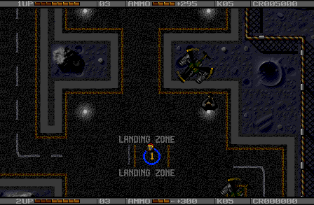
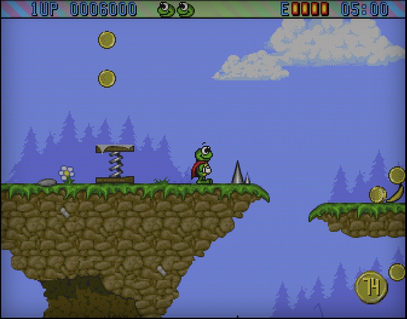
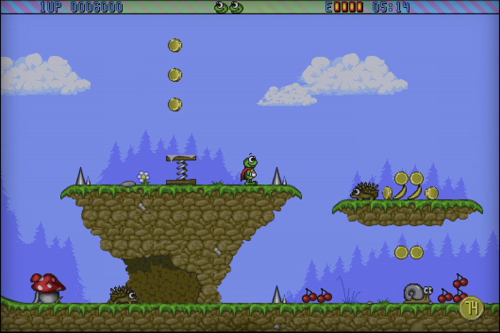

AREK (Amiga Reverse Engineering Kit) je volně dostupná sada nástrojů, se kterou umělá inteligence rozebere hru z Amigy z devadesátých let kousek po kousku a postaví ji znovu jako moderní program. Přestavěná hra se hraje jako originál, na dnešních monitorech se hýbe plynule a umí ukázat víc z levelu, než se vešlo do starého okna.
První hrou je Alien Breed II. Jeho první dva levely si tu zahrajete s vlastní kopií hry. Další na řadě je Superfrog.
Nahráno v obyčejném webovém prohlížeči, dvakrát stejný úsek prvního levelu. Žádný emulátor, žádná Amiga: vlastní kód hry, přeložený a spuštěný jako součást stránky.
Původní okno: vlastní obraz hry, 50 snímků za sekundu na 60Hz monitoru, nahráno při 60 fps; tady se zapnutým vzhledem starého monitoru.Širší výhled: víc mapy kolem hráče a pohyb dopočítaný na 60 Hz monitoru, nahráno při 60 fps (120Hz monitor tu vidět není).
Zahrajte si Alien Breed II

Alien Breed II: The Horror Continues. Team17, 1993. Ukázka, která končí po druhém levelu.
Úvod, titulní obrazovka a první dva levely: probojujte se základnou plnou vetřelců, sbírejte klíče a kredity, kupujte zbraně u terminálů a dojděte k východu.
Klávesnice (šipky, Ctrl nebo Z střelba, M mapa, mezerník u terminálu) nebo gamepad; jeden nebo dva hráči.
Klávesa E kdykoli přepne mezi původním obrazem a širším, plynulejším výhledem.
Potřebujete vlastní obrazy disket verze pro Amigu 500 (diskety 1 a 2 jako .adf). Ověřeno zatím s dumpy, které se dochovaly (vydání Fairlight, s trainerem i bez něj; seznam). Originální prodejní disketa ověřená není: pokud ji máte, ozvěte se prosím, to je pomoc, kterou potřebuju nejvíc. Verze AGA pro A1200 podporovaná není.
Stránka neobsahuje žádná data hry: žádnou grafiku, levely, výpisy kódu ani hudbu. Kód odvozený ze hry je zašifrovaný a odemkne se jen vašimi vlastními disketami, které nikdy neopustí váš počítač.
Superfrog (Team17, 1993). Jeho přestavba se ověřuje proti originálu, zatím si ji tu nezahrajete. Dva obrázky z ní, se zapnutým vzhledem starého monitoru:

Původní okno, jak ho kreslila hra.

Širší výhled: víc z levelu na obě strany.
Stav, říjen 2026
Alien Breed II: úvod, titulní obrazovka a levely 1–2 hratelné, režimy Originál a Vylepšeno, jeden nebo dva hráči. Změřeno proti originálu v emulátoru (zveřejněné sestavení na kitu 0.8.4, level 1, čtyři třicetisekundové běhy s náhodným joystickem): shoduje se 99,9 % bodů obrazu, zápisy do zvukového čipu se shodují v 97–100 % snímků a stav hry se shoduje tik po tiku po celý běh v jednom ze čtyř; v ostatních se běhy po 1–3 sekundách rozejdou kvůli malým rozdílům v časování procesoru.
Proč jen dva levely: v přestavbě běží celá hra. Režim Vylepšeno se ale ladí a ověřuje level po levelu: širší okno, dřívější aktivace objektů i směrování zvuku závisí na tom, jak je který level postavený, a hotové jsou levely 1 a 2. Další levely běží, ale sám jsem je ještě nedohrál a nechci je ukazovat, dokud nebudou hotové.
Superfrog: ve fázi ověřování, zatím nehratelný.
Nepodporováno: verze AGA Alien Breed II; originální prodejní diskety zatím ověřené nejsou (viz otázky a odpovědi).
Vyzkoušeno v: zatím v Chromiu a WebKitu; další prohlížeče po spuštění. Na telefonu zatím nevyzkoušeno.